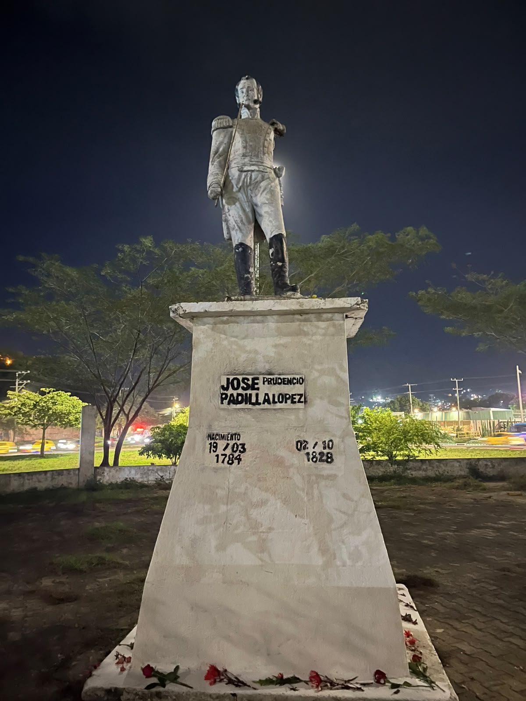

Pregón N.º 01 · Memoria y espacio público
José Padilla frente a la blanquitud monumental
Un almirante negro fusilado por la república que ayudó a fundar, olvidado en una glorieta sin paso peatonal. Lo que el abandono de su estatua revela sobre quién puede ser paisaje en Santa Marta.
Roberto Almanza Hernández 5 min de lectura

El pasado 2 de octubre, el colectivo organizador de la IV Semana Antirracista de la Universidad del Magdalena intervino el monumento del almirante y prócer de la Independencia, el afrocaribeño José Padilla López, como una forma de reivindicar su memoria en la ciudad de Santa Marta. El primer reto que debimos enfrentar para llevar a cabo la jornada fue llegar hasta el sitio, ubicado en la glorieta del barrio Mamatoco. Es un nodo vial de tráfico frenético, sin paso peatonal. El solo hecho de llegar allí fue una hazaña en sí misma. Ante la ausencia de señalización peatonal, nos abrimos camino haciendo señas a los conductores, quienes disminuyeron la velocidad y nos cedieron el paso.
Al acercarnos a la plazoleta pudimos corroborar un deterioro que desde la distancia apenas se vislumbra: concreto desgastado, muros manchados, restos de quema y basura esparcida. El pedestal y la escultura de Padilla presentan un deterioro semejante. Una base erosionada y grafiteada sostiene la estatua de un Padilla mutilado, con manchas, pérdida de recubrimiento y sin una placa que siquiera permita identificarlo. Toda una oda a la desidia. La intervención tenía como propósito rendir homenaje a Padilla al cumplirse 198 años de su ejecución por orden de Simón Bolívar, el 2 de octubre de 1828. El almirante fue fusilado y su cuerpo posteriormente colgado en la horca: un escarmiento público y humillante en una naciente república cuyas élites, que se imaginaban blancas, temían un eventual poder político de los descendientes de africanos. Durante la jornada limpiamos la plazoleta, pintamos la base, lo enaltecimos con flores a su alrededor e improvisamos una placa con pintura negra.
El monumento de Padilla constituye un buen ejemplo de cómo se despliega de manera concreta la blanquitud monumental. Se trata de una tecnología de inscripción histórica, material, estética y epistemológica mediante la cual la blanquitud se presenta como centro oficial de la historia, como autoridad para producir memoria y como ocupante “natural” del espacio público. En otras palabras, la blanquitud monumental es la manera como la blanquitud se vuelve paisaje, ocultando las tramas complejas de su producción histórica.
En Santa Marta, ciudad que hace apenas un año conmemoró los 500 años de su fundación colonial, dos figuras concentran buena parte del sitial de esa monumentalidad blanca: el colonizador Rodrigo de Bastidas y Simón Bolívar. El primero ocupa un lugar prominente en el Camellón de la Bahía, en pleno centro de la ciudad; el segundo permanece resguardado en la Quinta de San Pedro Alejandrino. En ambos casos, su magnificencia no reside únicamente en la escala del monumento, sino en su disposición espacial, en las vías que conducen hacia ellos y en las infraestructuras que hacen posible el encuentro. La memoria hecha monumento posee también una disposición física que nos acerca a ella.
La blanquitud monumental organiza igualmente el reconocimiento histórico: establece qué figuras ocupan lugares centrales y cuáles quedan relegadas a la irrelevancia dentro del relato de la ciudad. Por eso, la visibilidad y la accesibilidad son determinantes para comprender su despliegue en el espacio público. No se trata de que solo puedan aparecer figuras blanco-mestizas. También pueden estar presentes indígenas, afrodescendientes, campesinos y sujetos populares, pero remitidos a un pasado lejano, convertidos en presencia exótica o incorporados a un relato silente. Estar emplazado en el espacio público no garantiza participar de la vida pública como protagonista.
La dificultad misma para llegar al monumento de Padilla permite interrogar esa distancia entre presencia monumental y posibilidad de encuentro. Padilla está allí, pero llegar hasta él exige atravesar una infraestructura urbana que prácticamente lo aísla. Su presencia física no equivale a una presencia activa dentro de la memoria pública de la ciudad. A esto se suma otro rasgo de la blanquitud monumental: la distribución del cuidado. La conservación, el mantenimiento, la restauración o, por el contrario, el abandono de determinados monumentos también produce jerarquías de memoria. Cuidar una memoria significa prolongar materialmente su presencia; abandonarla puede condenarla lentamente a desaparecer del paisaje y de la conversación pública.
En Santa Marta existe además una clara jerarquía narrativa sobre quién puede representar el origen y la historia de la ciudad. Esto se hizo especialmente visible durante la presentación de la identidad gráfica conmemorativa de los 500 años, desarrollada por Tras La Perla de Carlos Vives y entregada oficialmente a la ciudad. La imagen inicial, centrada en Rodrigo de Bastidas acompañado de figuras indígenas, provocó la protesta de organizaciones afro de Santa Marta, que denunciaron la omisión de la presencia negra y afrodescendiente dentro del relato conmemorativo. Pero el problema no radica únicamente en quién aparece o desaparece de una imagen. Lo más grave concierne a la gramática mediante la cual se narra el origen. Tras La Perla ha presentado la fundación de Santa Marta como un “sueño de convivencia” y reivindica un “pacto fundacional” entre Rodrigo de Bastidas y los caciques de Bonda, Taganga y Gaira, un gesto de conciliación que Carlos Vives denomina “El pacto que nos une”. La colonización deja así de estar asociada a violencia, despojo y dominación para convertirse en una escena originaria de encuentro y armonía.
Esto nos lleva a una última dimensión de la blanquitud monumental: su dimensión afectiva. La monumentalidad no opera solamente mediante piedra, concreto, nombres y emplazamientos. También organiza afectos, orgullo, nostalgia, reconciliación y pertenencia. No es casualidad que, en un conversatorio oficial sobre los vínculos entre Santa Marta y España, se hablara del “orgullo de pertenecer a la hispanidad” y se colocara el legado de Rodrigo de Bastidas dentro de una narrativa de hermandad.
Frente a esa monumentalidad colonial celebratoria, los colectivos organizadores de la IV Semana Antirracista y Descolonial levantamos nuestro pregón desde el monumento deteriorado de José Padilla, conjurándolo desde otra imaginación de nación. En ese gesto, el monumento deja de ser únicamente una pieza relegada del paisaje urbano y se convierte en un contra-monumento frente a la blanquitud monumental: una memoria que irrumpe, incomoda y disputa el relato oficial. Desde esa orilla extendemos la invitación a participar en las actividades académicas, artísticas y festivas que tendrán lugar en la Universidad del Magdalena del 21 al 24 de octubre, bajo el título Las vidas negras frente a la blanquitud monumental.
Cómo citar esta columna
Almanza Hernández, Roberto. 2026. «José Padilla frente a la blanquitud monumental». Pregón de esquina, Pensamiento Caribe, 7 de octubre. https://pensamientocaribe.org/pregon/jose-padilla-blanquitud-monumental.html